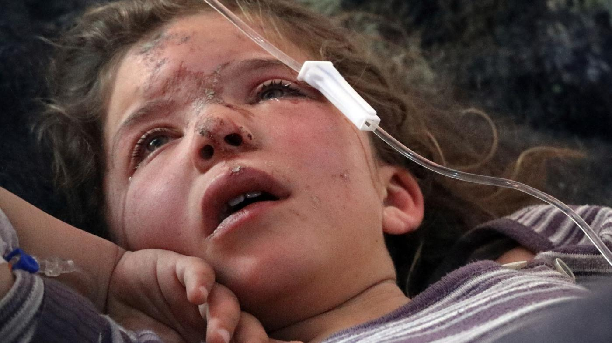

About Us
She Needs Your
HELP!
Let's celebrate NGOs in this moment of crisis
Non-governmental organizations (NGO) and non-profit organisation (NPO) have been around us since
18th century.
They form a huge community of ordinary people, a lot of them volunteers, that share a vision and
mission.
To maintain their autonomy in management and impartiality, some of those organisations avoid
official funding and work with donations.
Back in 2014, February 27th was declare World NGO Day and is celebrated in almost 100
countries.
Let's recognize and celebrate their daily service in the best way that they need at this very moment
when they're rescuing the victims of the recent earthquakes in Turkey and Syria:
Let's DONATE.
They help
Humanitarian Relief Foundation
IHH has been working since 1992 with the purpose of delivering aid to all people who are in need, who have experienced a catastrophe, who are victims of war, natural disaster, etc. or wounded, crippled, starved, homeless and persecuted, wherever they are, regardless of their religion, language, race or sect, and to prevent the violation of the basic human rights and freedoms of those people. IHH's voluntary relief activities evolved into an official organization in 1995 and spread around five continents as it established a bridge of goodwill stretching from Turkey to 123 countries.
IHH is providing aid to earthquake victims through search and rescue operations, delivery of emergency supplies, setting up soup kitchens, aid distribution, health services, and psychological support. Their efforts are crucial in helping the victims recover from the disaster.
Save the Children is an organization dedicated to improving the lives of children around the world. Their work focuses on ensuring children have access to healthcare, food, shelter, education, and child protection services when they need it most. The organization is committed to helping all children achieve their full potential, grow up healthy, receive a good education, and stay safe.
Save the Children is providing emergency relief, child protection, education, healthcare, and advocacy to those affected by the earthquake in Turkey and Syria. Their efforts are focused on meeting the specific needs of children and families in the affected communities.
Concern is an international humanitarian group with a mission to create a world without poverty, fear, and oppression. Their work involves providing critical interventions to some of the world's most vulnerable individuals, from emergency response efforts to innovative development programs. They make every effort to reach those who are the most difficult to access, ensuring that no one is left behind.
Concern Worldwide is providing aid to earthquake victims in Turkey and Syria by supplying blankets, heaters, food, and water. They are also opening community centers and prioritizing shelter for those affected. With your help, they can scale up their life-saving support.
Human Appeal Ireland is non-profit organization based in Ireland that works to support vulnerable individuals affected by poverty, social injustice, and natural disasters. They provide emergency relief and long-term support to refugees and those displaced by conflict in 25 countries, as well as supporting projects within Ireland to bring equity and fairness to marginalized and homeless individuals. The organization aims to create a world without poverty and hunger by investing in sustainable development programs that help communities lift themselves out of poverty.
Human Appeal is providing urgent aid, such as hot meals, hygiene kits, and medical care, to the earthquake victims in Turkey and Syria. They are also supporting Al Imaan Hospital in Syria and providing healthcare through their mobile clinics. Donations to their Turkey and Syria Earthquake Emergency appeal are needed to continue supporting those affected by the earthquake.
You can help too
The NGO World Day is approaching.
We can all celebrate by
donating.
These are the direct links to their donation pages.
Click on to donate and be part of a
positive
change!
You can help a displaced family to receive emergency shelter material, such as tarpaulins and ropes, and/or feed a 4 members family during a month thanks to your donation.
Your contribution will provide heater and fuel, survival kits and other basic needs to families in need after this tragedy.
Your donations will be used in all areas according to the need in the earthquake zones. Since it is an emergency, conditional donations (hygiene, heater, coat, etc. ) will also be used in all earthquake-related works according to need.
You'll provide a vulnerable family with food for a month, clean water and medical aid. Your donation is a lifeline for a family that has lost their home and livelihood.